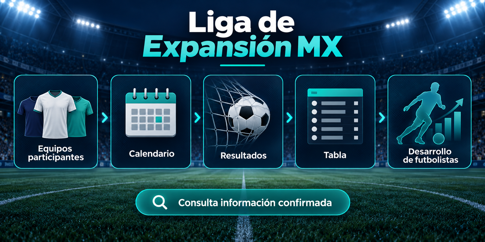

Su lugar en el sistema del fútbol mexicano
La Liga de Expansión MX es una competencia profesional situada debajo del máximo circuito. Tiene calendario, tabla, resultados y equipos participantes propios; por eso sus estadísticas deben consultarse por separado de las de Liga MX.
Su función deportiva y administrativa ha evolucionado. Las condiciones de participación, certificación y movimiento entre divisiones pueden modificarse de un ciclo a otro, así que una regla histórica no debe tratarse como vigente sin confirmación.
Cómo funciona una temporada
La competencia suele organizarse en torneos cortos con fase regular y fase final. El número de clubes, el sistema de clasificación y los criterios de desempate dependen del reglamento de cada edición. Antes de interpretar una posición o un posible cruce, identifica el torneo y la jornada a la que corresponde la información.
La tabla ayuda a comparar puntos y rendimiento colectivo; los resultados explican qué marcadores provocaron cada cambio; el calendario permite revisar qué encuentros están programados. Separar esas consultas evita confundir un partido futuro con un resultado oficial.
Equipos participantes y proyectos regionales
Los equipos participantes representan proyectos de distintas ciudades y regiones. Su lista puede variar entre temporadas, por lo que conviene revisar el directorio del torneo en lugar de apoyarse en listados antiguos o en referencias de otra competencia.
Además de competir por los objetivos de cada torneo, muchos proyectos dan continuidad a futbolistas jóvenes y también ofrecen espacio a jugadores con experiencia. Esa combinación hace que el desarrollo de futbolistas sea una parte relevante de la categoría, sin que sustituya la identidad deportiva de cada club.
Relación con Liga MX
Liga de Expansión MX y Liga MX comparten el contexto general del fútbol mexicano, pero no una sola clasificación ni un solo calendario. Para comparar conceptos de la primera división, revisa cómo funciona el descenso en Liga MX; para datos de esta competencia, usa siempre sus páginas específicas.
Cómo consultar tabla, resultados y calendario
- Abre la tabla de Liga de Expansión MX para revisar la clasificación publicada.
- Consulta los resultados para identificar marcadores finalizados.
- Consulta los equipos participantes antes de comparar datos entre temporadas.
- Confirma la jornada y la fecha de revisión si un dato puede haber cambiado.
Qué conviene comprobar cada temporada
Prioriza comunicados de la competencia y de la FMF cuando busques una decisión vigente. Verifica equipos participantes, reglamento, calendario y cualquier condición administrativa antes de tomar una noticia de otro torneo como referencia definitiva.